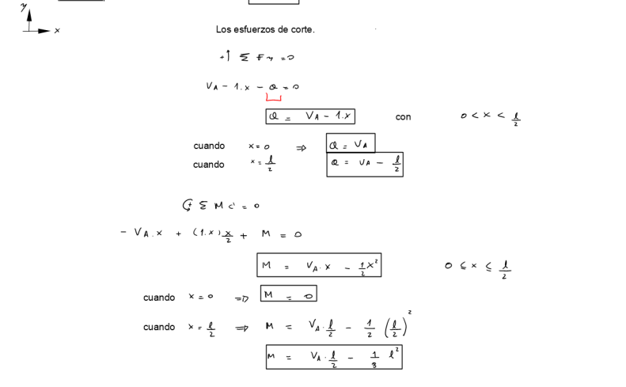
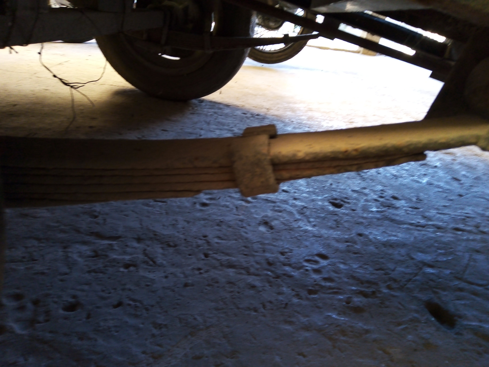

Informe de Estática y Resistencia de Materiales 2
Introducción.
El informe consiste en realizar un estudio sobre los materiales elásticos sus fundamentos teóricos y luego aplicarlo a un problema en concreto que sera especificado. También se mostrará una referencia histórica de como evolucionó a lo largo de la historia las suspensiones de un acoplado, específicamente. La finalidad concreta del proyecto busca encontrar las causas posibles que pueden causar deformaciones en una suspensión de un acoplado que se detallara en un relevamiento fotográfico en secciones siguientes.
Resumen.
En primer lugar se realizará un estudio sobre los materiales elásticos y se utilizarán los fundamentos teóricos para tratar de detectar una falla producida en un acoplado (ver referencias de fotos en anexo).
Indice.
1 Estudio de los materiales elásticos y fundamentos teóricos.
Elásticos.
Esquema teórico. “Viga equivalentemente recta”.
Tipos de amortiguadores.
2 Aplicaciones
Presentación del problema.
como se realiza la revisión técnica del acoplado
Análisis Estructural.
Análisis de falla.
Análisis de carga
Hoja de ruta.
Arbol de fallas.
Diagramas esquemas de la pieza.
Gráfico de saltos.
3 Referencia histórica.
Evolución de las suspensiones.
4 Finalidad: encontrar las causas de deformaciones en suspensión de acoplado.
5 Releva miento fotográfico(enumerar).
1 Estudio de los materiales elásticos y fundamentos teóricos.
Todas las estructuras presentan un cierto grado de propiedades elasticas. Es decir que cuando los cuerpos sufren la acción de las fuerzas exteriores son perfectamente elásticos.
No se considera la estructura molecular dado que consideramos como homogéneo la distribución como todo un continuo en su volumen. De forma que cualquier elemento extraído de el poseen las mismas propiedades físicas (material isotrópico).
Entonces para nuestro estudio, vamos a considerar que nuestro material es en su totalidad un material isotrópico. Por lo que las propiedades elásticas van a ser las mismas en todas las direcciones. Tenemos que tener en consideración que los materiales estructurales normalmente no cumplen con el enunciado anterior. Los materiales estructurales distan mucho de lo anterior, de ser homogeneos, pero las teorias elásticas admiten las condiciones de homogeneidad e isotropía y pueden ser aplicadas.
Las propiedades elásticas pueden variar de un entorno de acuerdo a su dirección. Los cristales que conforman al material (en nuestro caso referimos a los cristales de los aceros, un perfil estructural que serán detallados mas adelante) están orientados al azar y para piezas que son muy grandes se utiliza el promedio de las propiedades de dichos cristales.
Un supuesto a considerar es que siempre las dimensiones geométricas de un cuerpo son mas grandes comparadas con las dimensiones de los cristales. Por lo tanto podemos suponer que el material posee una homogeneidad que puede ser usada con gran exactitud. Y estando los cristales al azar entonces tambien pueden ser tratados como isótropos.
Cuando a causa de ciertos procesos tecnológicos por ejemplo el laminado, predomina una cierta orientación de los cristales de un metal, entonces las propiedades elásticas dependen de la dirección y debe considerarse anisótropo.
Concluyendo en este razonamiento, de acuerdo el tipo de tratamiento que hayan recibido los perfiles vamos a tener que clasificarlo como un material isotrópico o anisotrópico.
1.1 Elasticidad.
1.2 viga equivalentemente recta

2 aplicaciones
Presentaciòn del problema.
Problemática: Remolque de auto, suspensión deformada.
En un acoplado de automóviles el cual se resguarda en la intemperie, sometido a cargas variables (como por ejemplo, traslado de vigas, chapas, materiales de construcción)-. Se encontró que uno de los encastre, que evita el desplazamiento horizontal y sostiene manteniendo unidos los elásticos(en nuestro caso, el elastico es de 8 hojas), se encuentra deformado. Según el esquema de la figura c).
http://www.trailersauce.co.nz/trailer-plans/8-x-5-single-axle-trailer/cutting-list-components/
Las figuras a), b), c) y d) corresponden al relevamiento fotográfico realizado. (ver anexo “1 relevamiento geográfico”.)
Figura a) esquema general del acoplado
Unidades: centimetros (cm)

Figura b) vista superior de acoplado.
Figura c) pieza defectuosa.
Se muestra el eje teórico que deberían tener las caras enfrentadas y en color rojo el valor real de la disposicion de las caras. Se puede apreciar que son antiparalelas.
Figura d) medidas de la pieza en milímetros (croquis).
Figura e) Descomposición de las deformaciones
Figura f)
Vemos que en el primer dibujo los esfuerzos tienden a elevar las caras, sin embargo las caras siguen enfrentadas con una pequeña inclinación. Luego los esfuerzos perpendiculares a las normales de las caras tienden a alejar las caras de la pieza.
Nombre de las piezas.
como se realiza la revisión tecnica del acoplado
Fuente: MANUAL DE PROCEDIMIENTOS DE REVISIÓN TÉCNICA OBLIGATORIA (Ministerio de transporte)
Estructuras de Aceros.
A los materiales estructurales podemos clasificarlos de la siguiente manera.
En nuestro caso, la suspensión corresponde a un material lineal, e isótropo. Es decir que el material goza de la propiedad de reversibilidad de los procesos de solicitación y descarga, y las propiedades definidas por los módulos de elasticidad longitudinal, E, Transversal, G, y de poisson, v, permanecen constante sobre toda la respuesta.
Criterios de diseño:
Para el diseño estructural se basa en seleccionar la solución que debe adoptarse entre un conjunto de estructuras que constituyen soluciones alternativas en un problema dado de diseño.
La elección se basa en una comparación entre las esperanzas de los valores actualizados de las utilidades que se deriven de la obra en cada caso. De manera analítica.
U= B - C - D
Donde
U es la utilidad esperada
B es la esperanza de la suma de los beneficios actualizados que se derivan de obra desde su construcción hasta su eventual falla.
C= esperanza del costo inicial actualizado.
D esperanza de la suma de los costos actualizados de los daños o fallas que ocurren.
De forma discreta definimos el concepto de estado límite correspondiente a una discretizacion de las variables continuas de la utilidad de nuestro objeto de estudio.
Donde el Estado limite es aquella etapa en donde la estructura o parte de ella deja de cumplir con alguna gunción para la que fue proyectada.
notas - sobre los elasticos.
“Los elásticos absorben y luego ceden” “devuelven casi la totalidad de la energia acumulada”
-- se refiere a la energía que absorbe y luego cede --
-- lo que busco es disipar energía- - y luego restaurarla-
-un amortiguador es distinto a un resorte- -el amortiguador observe la carga, queda precargado y luego de retirar la carga, ahí empieza a restaurar la energía que absorbió en el proceso-.
-requisito que sea liviano-.
Elásticos. Se apoya y luego se deforma, cuando se deforma la carga empieza a ser recibida por la otra.
Conclusión.
Pudimos obtener un analisis de fallas de una problemática especifica, obtener una mirada estrictamente teorica y a partir de la modelizacion analizar la problematica con las variables de entorno reales. Con el objetivo de obtener todas las posibles causas que pueden producirse en un sistema que esta sometido a esfuerzos.
Anexo.
1 Relevamiento fotográfico:
Foto 1 Foto 2
Foto 3 Foto 4


Foto 5 Foto 6

Foto 7 Foto 8
Foto 9 Foto 10
Foto 11 Foto 12

Foto 13 Foto 14
Foto 15 Foto 16
Foto 17 Foto 16